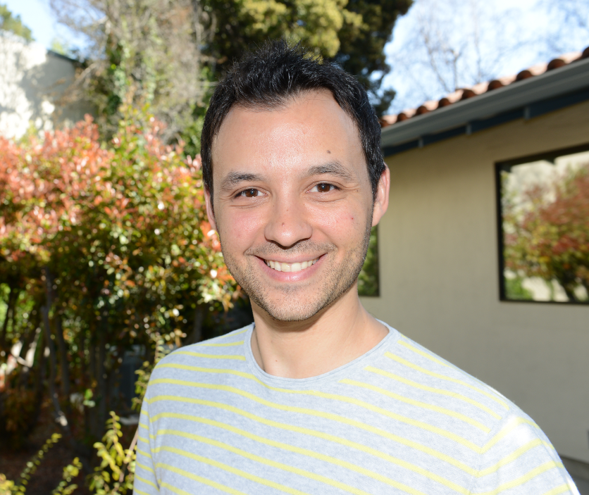

Hi. I'm Carlos Agüero.
Open Source Robotics developer to help your real-robot and simulation projects.
Robotics Developer and Technical Lead during the last 15+ years focused on Open Source projects. Particularly interested in: simulation, networking, and multi-robot projects. You can learn more about me here
Learn about what I do